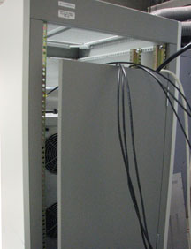
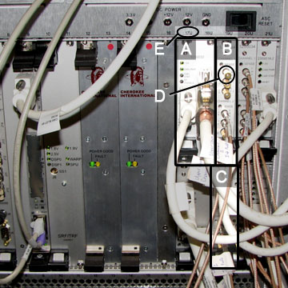
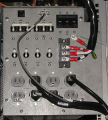
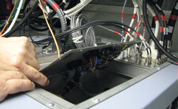
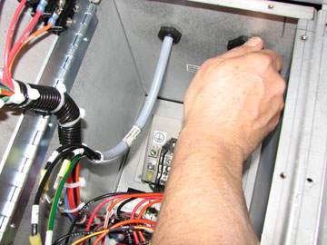
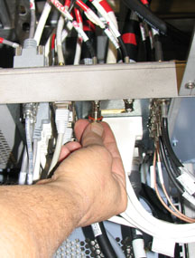
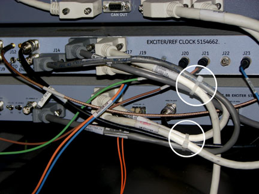
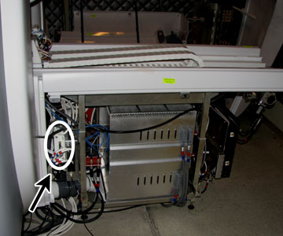
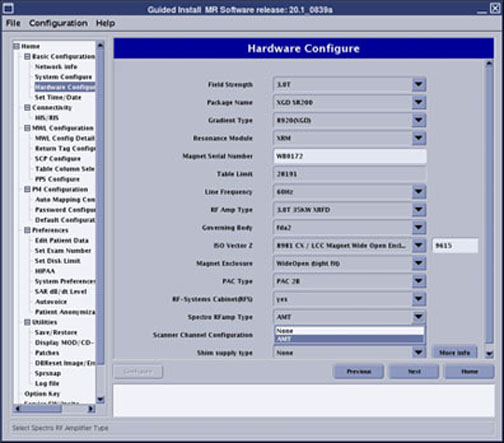

Operating Documentation
Direction 5670000, Rev# 1
Optima MR450w 1.5T Service Methods
Module Version 10.0, Version Date 5/19/09
Operating Documentation |
| Required Persons | Preliminary Reqs | Procedure | Finalization |
|---|---|---|---|
| 2 | Not Applicable | 9 hours | Not Applicable |
The Excite 3.0T MNS kit includes a broadband exciter, amplifier, cabling, T/R switch, and service coil for 31P spectroscopy.
For MNS installation, complete all sections of this document in sequential order.
For a MNS upgrade, complete:
System Power Shutdown - System Power Shutdown
Select the appropriate section for the area being upgraded
Restoring System Power - Restoring System Power
Configuration - Configuration
Verifying Configuration Settings - Verifying Configuration Settings
Other MNS nuclei are supported by the kit although separate T/R switches, coils, and phantoms will be necessary. An 8kW amplifier (AMT/Herley) is supported.
| Item | Qty | Effectivity | Part# | Manufacturer | |
|---|---|---|---|---|---|
| Non-Magnetic Tool Kit | 1 | - | 5112581 | - | |
| Item | Qty | Effectivity | Part# | Manufacturer |
|---|---|---|---|---|
| Tie Wraps | As needed | - | - | - |
| ||||
| FATAL ELECTRIC SHOCK HAZARD! | ||||
| LETHAL VOLTAGES ARE PRESENT WITHIN THE power distribution unit (PDU) EVEN IF ALL PDU BREAKERS ARE OFF. | ||||
| Disconnect and Lockout/tagout (LOTO) the power from the system at the facilities Main Disconnect. |
| Condition | Reference | Effectivity |
|---|---|---|
Remove any twists and kinks from the cabling. When routing cables, avoid circular loop bundles. Use “figure eight” coils of less than six feet in diameter. | - | - |
Allow three feet (one meter) of cable slack at the entrance to the cabinets. | - | - |
Before positioning the cabinet, move the MNS cabinet door down using the adjustable hinges. With an opening at the top of the cabinet, the cables can be routed up and out of the MNS cabinet. | - | - |
| ||||
| FATAL ELECTRIC SHOCK HAZARD! | ||||
| LETHAL VOLTAGES ARE PRESENT WITHIN THE PDU EVEN IF ALL PDU BREAKERS ARE OFF. | ||||
| Disconnect and Lockout and tagout power from the system at the facilities Main Disconnect. |
| ||||
| Prior to powering down the entire Systems Cabinet, perform a system shutdown of the system software. The Volume Recon Engine (VRE) System which resides in the Systems Cabinet can become corrupted if it loses power while applications software is active. | ||||
To prevent fatal electric shock, disconnect the power from the PDU before performing the following procedures.
Notify ALL personnel that are working on the system that the system is being shut down.
Shut down the system software before removing power.
For PDU (in PGR Cabinet, with plastic safety cover):
Open the front left door of the PGR cabinet.
Open the plastic cover and flip the operator's workspace host circuit breakers to the OFF position. This allows control upon power up, when this procedure is completed.
Rotate the larger main breaker labeled INPUT counter-clockwise to the green OFF (O) position.
Perform the LOTO for the PGR PDU/Gradient Subsystem which will disconnect the INPUT circuit breaker.
For reference, see Illustration 19 for the MNS cable map.
Move the MNS cabinet door down approximately five holes using the adjustable hinges. All the cables, with the exception of the power cable (routed through the bottom of the cabinet), are routed up and out of the top of the MNS cabinet (see Illustration 1).
Illustration 1: MNS Cabinet - Cable Routing

After installing the RF cable at connector J4 using the L-angle HN adaptor (46-221942P3), ensure that the cable connector HN and N adaptor threads are not loose.
For the 8kW MNS installation there are supplemental circuit boards that need to be installed. These include:
2 BB UPM RF detector boards (5250034 or equivalent).
1 BB Amp I/F board (5250032).
At the front of the PGR Cabinet, locate slots 19U and 19L of the UPM chassis (see Illustration 2). Remove covers for blank slots and insert one BB UPM RF detector board in each slot (see Illustration 2).
Locate slot 17U/18U in the UPM Chassis. Remove the covers for the blank slots and insert the BB Amp I/F board (see Illustration 2).
Illustration 2: BB UPM RF Detector and BB Amplifier I/F Board

| A | BB Amplifier IF Board - Slot 17U and 18U |
| B | BB UPM RF Detector Board 19U |
| C | BB UPM RF Detector Board 19L |
| D | 50 Ohm Terminators |
| E | Slot Identification Numbers |
Locate pre-installed white sub-D cable, part number 5166354, that is coiled and secured in right-side of cabinet. Uncoil and attach to BB AIF Board J3 in slots 17U, 18U.
Remove power distribution module (PDM) located in the top right corner of the PGR cabinet.
Remove all cables connected to the front and top of the PDM (see Illustration 3 and Illustration 4).
Illustration 3: Front of PDM

Illustration 4: Top of PDM

From the top of the PGR cabinet, remove the outer edge screws surrounding the PDM securing this unit to the rails. Then, remove all the screws to the PDM door (see Illustration 5).
Illustration 5: PDM Door Open

Open the door. From inside the PDM, unscrew the two cables locks (block retaining nuts) from the rear of the PDM and disconnect the connections from the two terminal blocks. Once cables are disconnected, the PDM door should be closed.
| NOTE: | It is important to note the orientation of the connections at the terminal blocks. Mark the cables or make notes to reconnect these cables correctly later on in the procedure. |
Illustration 6: PDM - Internal Cable Disconnect

Slide the PDM out from the front of the PGR Cabinet. Set this to the side on a flat and safe surface.
At the I/O panel, remove the blank plate from the J204 connection.
Attach the cable 5271096 to J204 on the underside of the I/O panel (see Illustration 7). Run this cable along the side of the cabinet between the cabinet wall and the Recon components. Attach the other end of the cable to the BB AIF board to CAM SLOT 17/18FU J5(see Illustration 2).
Illustration 7: I/O and Cable Locations

| A | PGR I/O Panel |
| B | BNC Cables |
| C | UPM Cable |
| NOTE: | Before attaching the BNC cables (J200-203) to the I/O
panel, connect the adapters (46-208990P1) to the BNC connectors (see Illustration 8). Illustration 8: BNC Connector and Adapter
|
Attach the BNC cables to J200-203 connections on the underside of the I/O panel (see Illustration 7 and Illustration 9). Run these cables along the side of the cabinet between the cabinet wall and the Recon components. Attach the other ends to CAM Slot 19FU J4, CAM Slot 19FU J5, CAM Slot 19FL J4, and CAM Slot 19FL J5(see Illustration 2).
Illustration 9: BNC Connectors at PGR Panel

Add the 50 ohm terminators (2329754 or equivalent) to all empty J-numbers on the RF Detector boards (see Illustration 2).
Tie-wrap the cables that run along the side of cabinet (see Illustration 10). Ensure that these cables are not in the way of other components that may require service.
Illustration 10: MNS Cables Tie-Wrapped

Once all cables are connected properly and tie-wrapped, slide the PDM into the PGR cabinet.
From the top of the PGR cabinet, open the PDM door and lead the power cables through the openings at the rear of the PDM Illustration 11.
Illustration 11: Cables from Rear of PDM
From the inside of the PDM, connect the cables and screw the black retainer nuts to secure the cables (see Illustration 12).
Illustration 12: Reconnect Cables in PDM

Close the PDM door. Attach the PDM to the rails with the surrounding screws; then, screw the PDM door closed.
Connect all cables to the top and front of the PDM (see Illustration 3 and Illustration 4).
Connect the ends of cables 5262319 to J1 and 5265145 to J2 at the rear of the Broadband Exciter module before inserting into the cabinet.
From the front of the cabinet, insert the module underneath the NB Exciter in the PEN Cabinet (see Illustration 13). Lead these cables to the rear of the cabinet.
Attach Exciter board to cabinet with the two thumbscrews (see Illustration 13).
In the scan room, open the PEN access panel and attach cable 5262319 to J31 and cable 5265145 to J33.
Illustration 13: BB Exciter Module Location

| A | CAN Fiber-Optic Board (CFB) |
| B | NB Exciter Board |
| C | MNS BB Exciter Board |
| D | Thumbscrews - Secure module to cabinet frame |
Close PEN access panel.
Detach cable 5171626 from NB Exciter J18 and reconnect to Broadband Exciter J17_J1 Lower. This cable is not part of the MNS cable kit.
Locate the cables indicated in Table 1 and connect as directed.
Table 1: Broadband Exciter Cable Connections
| Cable Part Number | Cable Run Number | J# on MNS Exciter | To be connected to | Description |
| 5266021 | [None] | J24 | J14 of NB Exciter | Conveys the clock and LO signal from NB to BB Exciter |
| 5165866-2 | [None] | J17_J1 (Upper) | J18 of NB Exciter | 1-Wire data |
| 5171626 | [None] | J17_J1 (Lower) | Pen Cabinet IO* (already installed) | 1-Wire data |
| 5265483 | E2024 | H1 (Gigalink IO) | J12 to IRF3 Board | Gigalink |
| 5167882-2 | [None] | J15 | J4 of SRPS | DC power for MNS Exciter |
| 5271821 | [None] | J21 | J16 of PEN cabinet top | MNS Tx output of Exciter |
| 5262319 | [None] | J1 | J31 of PEN Cabinet wall | MNS LO |
| 5265145 | E1309 | J2 | J33 of PEN Cabinet wall | MNS Loopback |
| NOTE: | For cable 5271821, if the cable is longer than required, make the excess length in a “figure eight” shape and tie-wrap. |
| ||||
| The module interconnect cables should not touch the PEN cabinet door. If the cables touch the door, it can cause a power interruption to the MNS Exciter. | ||||
Dress cables together with tie wraps to ensure the cables are safely contained within the cabinet (see Illustration 14).
On the NB Exciter, group cables from J14, J15, J17, J18, and J10.
On the BB Exciter, group cables from J14, J17, and J18.
Illustration 14: PEN Boards - Cable Tie Wraps

The MNS upconverter is installed on the rear pedestal of the magnet.
Illustration 15: Upconverter Location

Unscrew J8 connection from the re-route box with a flat-head screwdriver and set to the side. This will be connected to J4 on the upconverter. Carefully push wiring to the side and out of the way for upconverter installation.
Attach one mounting bracket to the re-route box and the other mounting bracket directly to the MNS upconverter.
Approach the opposite side of the rear pedestal from where the mounting bracket was attached and slide in the MNS upconverter. Fully attach the MNS upconverter to the re-route box.
Locate and connect the cables indicated in Table 2 and Illustration 16.
Table 2: MNS Upconverter Cable Connections
| Cable Part Number | Cable Run Number | J# on MNS Upconverter | To be connected to | Description |
| 5166749-5, -8 | M1308 | J3 | J31 of PEN Cabinet wall via overhead cable track | MNS LO |
| 5169804-22, -31 | M1309 | J1 | J33 of PEN Cabinet wall via overhead cable track | MNS Loopback |
| 5181541 | M3356 | J2 | J11 - Slot 11 board of RF Hub | Power and Controls for MNS Upconverter |
| 5191729-2 | [None] | J4 | LPCA Connector A via LPCA cable track | 8W8 Rx signal input from connector A |
| 5191729-3 | [None] | J5 | J8 of Re-route Box | 8W8 Upconverter signal output |
| NOTE: | On the RF control board, some cables may be need to be disconnected to properly connect the MNS upconverter cables. Reconnect these cables once the upconverter is fully installed. |
Illustration 16: Upconverter Box Diagram

| NOTE: | This diagram illustrates the upconverter box as viewed from the patient end. |
| NOTE: | The MNS T/R module should be removed from the system when spectroscopy is not in use. The presence of the module during a non-MNS scan may cause image quality degradation. |
With the LPCA cover off, place the two LPCA rails (p/n 5267384) on the top of the MNS LPCA cover so that the notches are facing up. When viewing from the patient-end, the right LPCA rail should have the notch farthest away and the left rail closest to.
Attach the rails to the cover by screwing the screws in from the underside (screwheads should be hidden underneath the cover).
Install the LPCA cover onto the system and secure with four screws.
Move the LPCA to a position for easy access – either to the front or the rear of the magnet.
Slide the MNS T/R Switch onto the two rails on front of the LPCA (see Illustration 17).
Illustration 17: Carriage Assembly Run to the Rear of the Magnet

| NOTE: | LPCA rails are not displayed in Illustration 17. |
| NOTE: | The delrin button at the side of the switch must be pushed
in order to disengage the switch from the LPCA rails. Illustration 18: Delrin Button on T/R Switch
|
Attach the cables of the MNS T/R Switch to the MNS A-port adapter (see Illustration 17).
Attach the A-port adapter to the A-port of the LPCA.
Loosen the two thumbscrews to remove the support bracket from the SPW (see Illustration 20).
Install the MNS TX switch to the support bracket and connect all cables as shown in Illustration 19, the DVMR MNS Cable Map. Refer to item C for the location of the MNS TX switch in Illustration 20.
Illustration 19: DVMR MNS Cable Map

| NOTE: | Click to download higher-resolution PDF of the MNS Cable
Map |
Illustration 20: MNS TX Switch Setup on SPW

| A | Support Bracket Thumbscrews |
| B | TX Switch 1 |
| C | TX Switch 2 (MNS) |
| D | Y-Cable |
Reattach the support bracket onto the SPW.
On the upper TX switch, remove the connection from J15 of the Magnet I/O and attach Y-cable to J123 on the upper TX switch and to J127 on the MNS TX switch (lower) (see Illustration 20). Connect the other end of the Y-cable to the J15 Magnet I/O connector (see Illustration 21).
Illustration 21: Y-Cable Connection to Magnet I/O Cable

Notify all personnel that are working on the system that the system is being powered-up.
| ||||
| Whenever the PEN cabinet LOTO is removed, the Exciter board requires 20 minutes of power-up time before scanning. | ||||
Remove the LOTO for the PGR PDU/Gradient Subsystem.
Open the plastic door over the front of the PDU breakers and switch ON the appropriate sub-system breakers.
Place any individual circuit breakers turned off to the ON position.
From the Common Service Desktop, click [Configuration], [Guided Install], and [FE mode](see Illustration 22).
Illustration 22: Common Service Desktop Path

Start the Guided Install using the operator login.
After the Guided Install window opens select [Option Key] tab.
Install the MNS option key using eLicense (refer to Software Option Install with eLicense Generated Keys).
Place rating plate on the rear of the GOC (if applicable).
Reboot the computer. The installation is now complete.
| NOTE: | The MNSpectro Option Key delivered with the Hydrogen Only Spectroscopy Option (PROBE/SV) must be previously installed. |
At the Common Service Desktop Manager, click on the [Configuration] tab.
Select Guided Install, then FE Mode from the navigation sidebar to launch the Guided Install GUI (see Illustration 23).
At the hardware configuration page, select AMT for Spectro RF Amp Type(see Illustration 23).
Illustration 23: Hardware Configuration Page of Guided Install

Ensure all other 3.0T settings are correct for the system.
Modify and save all changes. A reboot is required.
At the Common Service Desktop Manager, click on the [Utilities] tab.
Select the Config File Manager. Ensure the following parameters match the definitions set below (see Illustration 24):
Spectroscopy RF Amplifier= yes to configure the Multi-Nuclear Spectro RF Amplifier (amp to ready).
Broadband Transceiver = yes to configure the MNS BroadBand Transceiver (frequency change).
Power Monitor Type = 4.
3T Spectro RF AMP Type = 0.
Illustration 24: MR Configuration File

Click [Save Changes] before exiting.
Click [Quit] to exit the Config File Manager.
Reboot host to save file changes.
Perform Verification of SaveInfo Data.
Perform the TR DD System Path Check. This will ensure that the cables are connected properly and not accidentally swapped, primarily with the TX switch cables.
Perform the 8kW 3.0T MNS Amplifier Calibration.
Perform the Universal Power Monitor – MNS Setup and Calibration.
Perform the UPM - MNS Functional Check.
Perform the Multi Nuclear Spectroscopy (MNS) Functional Checks.